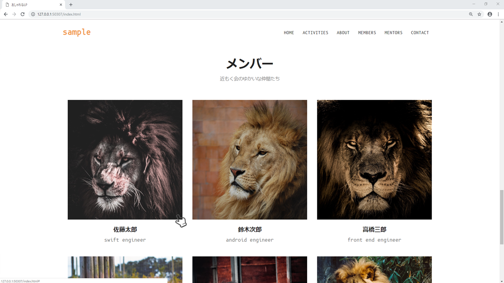
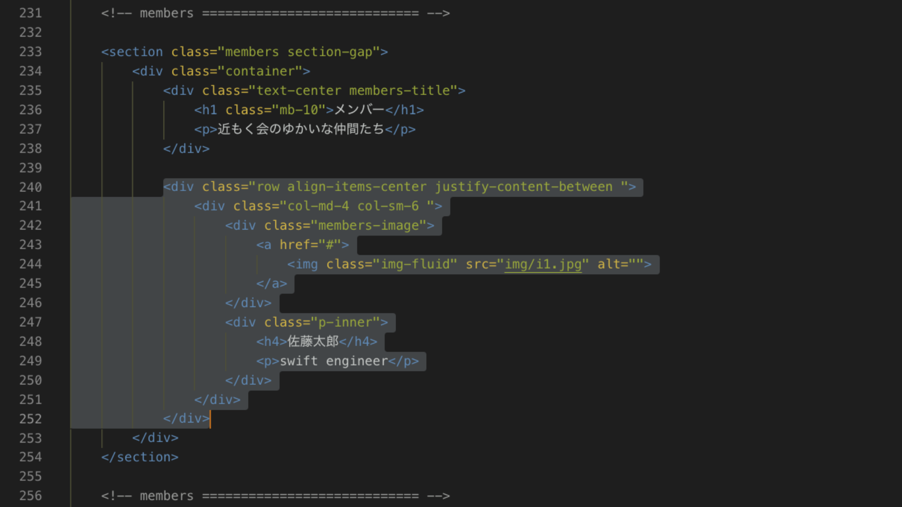
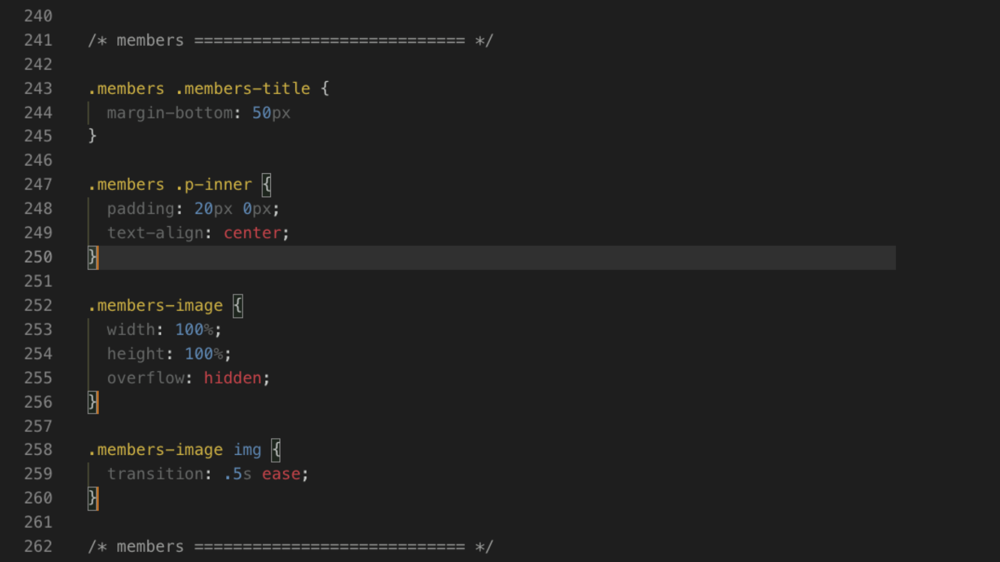

グリッド
今回のカラムはそれぞれ12割る3で col-md-4クラス そして col-sm-6クラス を設定しましょう。中には mambers-imageとp-inner というクラスを作成し、そのなかにそれぞれの要素を入れていきます。

それから members-imageクラス には[ over-flow:hidden; ]のcssつけます。これは ホバーアクション のテクニックの1つで特に綺麗に整列されたグリッドやアイコンマークに使われます。

綺麗なグリッドの縦横を崩したくない時に[ overflow:hidden; ]をつけておき、ホバー時に[ transform:scale(1.1); ]とすることでレイアウトが崩れず、aタグの強調ができます。